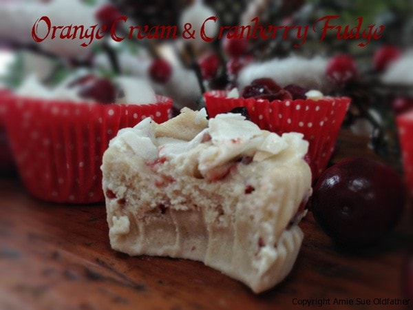

Orange Cream & Cranberry Fudge

~ raw, vegan, gluten-free ~
I don’t care how well you think you know me…. you can’t prove that those are my teeth marks!
This is a freezer fudge. What does that mean? It means that this isn’t the best fudge to take on a picnic or potluck. Nor do you want to stash a piece in your purse for a midday snack. But I will say that I did the official, “I-Purposely-Left-That-On-The-Counter-Don’t-Touch-That-Or-You-Will-Be-Sorry-Mister” test. And at 30 minutes, it was still holding its shape, but when I went to pick it up, it was very soft.

Below you will notice a picture where I poured the batter into small tins. I thought this would make a perfect gift. You can keep them in the freezer, and as you run out the door to meet your friends or family for coffee, lunch, or dinner, you can grab one of these on the way out of the door and become a super-hero! You will appear calm, organized, and ahead of the ball game. You can thank me for that later. :) Or have a game night with your loved ones and bring one of these out with a few spoons. Let everyone dig in while you come up with the earth-shattering, award-winning, high-score Scrabble word!! I love Scrabble even though I am one of the world’s worst spellers.
You may not know this about me, but I have a condition called: Hippopotomonstrosesquippedaliophobia! This means that I have a fear of long words. Yep, it’s true. Kind of ironic that such a fear, should come with such a loooong word, don’t you think? Haha, So my strategic approach to Scrabble is to utilize the double word, triple word, squares. Almost every game, I get the letter tiles to spell IQ. Can’t get much shorter than that and have you seen the price of a “Q” these days?! Scoff at me, but I have walked away with 33 points for that baby! Ok, I have gotten off the beaten path with that story. What more can I say, fudge… it’s creamy, delicious, healthy so darn easy to make.
yields 4 cups fudge
- 2 cups cashews, soaked 2 hours
- 1 cup water
- 1/4 cup maple syrup
- 1 cup coconut butter, softened
- 1 tsp orange extract
- 20 drops liquid stevia
- pinch Himalayan pink salt
- 1/2 cup dried cranberries
Preparation:
- Be sure to soak the cashews, rinse and drain them. Soaking will help to soften them so you can blend them into a cream.
- In a high-powered blender combine the cashews, water, and agave until smooth and creamy. This can take about 5 minutes. Be sure to stop the machine every so often and scrape the sides down and test the texture. If you still feel a little bit of grit, continue blending.
- Add the softened coconut butter, orange extract, stevia, and salt. Blend until combined.
- Add cranberries and blend for 30 seconds. Just long enough to break them up and mix them in.
- Pour the fudge batter into the desired container and sprinkle coconut flakes and chopped dried cranberries on top.
- Cover tightly and place in the freezer until firm. Enjoy! It softens after 30 minutes of sitting on the counter. So either enjoy right away from the freezer or allow it to soften some and eat with a spoon! No matter the shape or form, it tastes amazing.
© AmieSue.com